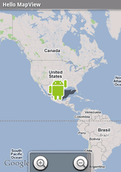

This tutorial requires that you have the Google Maps external library installed in your SDK environment. By default the Android SDK includes the Google APIs add-on, which in turn includes the Maps external library. If you don't have the Google APIs SDK add-on, you can download it from this location:
http://code.google.com/android/add-ons/google-apis
The Google APIs add-on requires Android 1.5 SDK or later release. After installing the add-on in your SDK, set your project properties to use the build target called "Google APIs Add-on". See the instructions for setting a build target in Developing in Eclipse with ADT or Developing in Other IDEs, as appropriate for your environment.
You will also need to use the android tool to set up an AVD that uses the Google APIs deployment target. See Android Virtual Devices for more information. Once you have set up your environment, you will be able to build and run the project described in this tutorial
A MapView allows you to create your own map-viewing Activity. First, we'll create a simple Activity that can view and navigate a map. Then we will add some overlay items.
<application> element:
<uses-library android:name="com.google.android.maps" />
<manifest> element:
<uses-permission android:name="android.permission.INTERNET" />
<?xml version="1.0" encoding="utf-8"?>
<RelativeLayout xmlns:android="http://schemas.android.com/apk/res/android"
android:id="@+id/mainlayout"
android:orientation="vertical"
android:layout_width="fill_parent"
android:layout_height="fill_parent" >
<com.google.android.maps.MapView
android:id="@+id/mapview"
android:layout_width="fill_parent"
android:layout_height="fill_parent"
android:clickable="true"
android:apiKey="Your Maps API Key"
/>
</RelativeLayout>
The clickable attribute defines whether you want to allow user-interaction with the map.
In this case, we set it "true" so that the user can navigate.
The apiKey attribute holds the Google Maps API Key that proves your application and signer
certificate has been registered with the Google Maps service. Because MapView uses Google Maps data, this key is required
in order to receive the map data, even while you are developing. Registration is free and it only takes a couple
minutes to register your certificate and receive a Maps API Key. For instructions on getting a key, read
Obtaining a Maps API Key.
(For the purpose of this tutorial, you should register with the fingerprint of the SDK debug certificate.)
Once you've acquired the Maps API Key, insert it for the apiKey value.
public class HelloMapView extends MapActivity {
isRouteDisplayed() method is required, so add it inside the class:
@Override
protected boolean isRouteDisplayed() {
return false;
}
You can actually run this now, but all it does is allow you to pan around the map.
Android provides a handy ZoomControls widget for zooming in and out of a View.
MapView can automatically hook one for us by requesting it with the getZoomControls()
method. Let's do this.
<LinearLayout
android:id="@+id/zoomview"
android:layout_width="wrap_content"
android:layout_height="wrap_content"
android:layout_alignBottom="@id/mapview"
android:layout_centerHorizontal="true"
/>
It doesn't really matter what kind of ViewGroup we use, because we just want a container that we can position within our root RelativeLayout.
The last two attributes are available only to an element that's a child of a
RelativeLayout. layout_alignBottom aligns the bottom of this element to the bottom of
the element identified with a resource tag (which must be a sibling to this element).
layout_centerHorizontal centers this on the horizontal plane.
LinearLayout linearLayout; MapView mapView; ZoomControls mZoom;
onCreate(). We'll capture the LinearLayout and
MapView through their layout resources. Then get the ZoomControls from the MapView::
linearLayout = (LinearLayout) findViewById(R.id.zoomview); mapView = (MapView) findViewById(R.id.mapview); mZoom = (ZoomControls) mapView.getZoomControls();
By using the ZoomControls object provided by MapView, we don't have to do any of the work required to actually perform the zoom operations. The ZoomControls widget that MapView returns for us is already hooked into the MapView and works as soon as we add it to the layout. The controls will appear whenever the user touches the map, then dissapear after a few moments of inactivity.
linearLayout.addView(mZoom);
So, we now have full interaction controls. All well and good, but what we really want our map for is custom markers and layovers. Let's add some Overlay objects to our map. To do this, we're going to implement the ItemizedOverlay class, which can manage a whole set of Overlay items for us.
When using Eclipse, right-click the package name in the Eclipse Package Explorer, and select New > Class. Fill-in the Name field as HelloItemizedOverlay. For the Superclass, enter com.google.android.maps.ItemizedOverlay. Click the checkbox for Constructors from superclass. Click Finish.
private ArrayList<OverlayItem> mOverlays = new ArrayList<OverlayItem>();
super(boundCenterBottom(defaultMarker));
public void addOverlay(OverlayItem overlay) {
mOverlays.add(overlay);
populate();
}
Each time we add a new OverlayItem, we must call populate(), which will read each of out
OverlayItems and prepare them to be drawn.
populate() method to read each OverlayItem, it will make a request to
createItem(int). We must define this method to properly read from our ArrayList. Replace the
existing contents of the createItem method with a get() call to our ArrayList:
@Override
protected OverlayItem createItem(int i) {
return mOverlays.get(i);
}
size() method. Replace the existing contents of the
method with a size request to our ArrayList:
return mOverlays.size();
That's it for the HelloItemizedOverlay class. We're now ready to use it.
Go back to the HelloMapView class. We'll start by creating one OverlayItem, adding to an instance of our HelloItemizedOverlay, and then adding this to the MapView.

First, we need the image that we'll use for our map overlay. Here, we'll use the Android on the right as our marker. Drag this image (or your own) to the res/drawable/ directory of your project workspace.
Now we're ready to work in the HelloMapView:
List<Overlay> mapOverlays; Drawable drawable; HelloItemizedOverlay itemizedOverlay;
onCreate() method. Instantiate the
new fields:
mapOverlays = mapView.getOverlays(); drawable = this.getResources().getDrawable(R.drawable.androidmarker); itemizedoverlay = new HelloItemizedOverlay(drawable);
All overlay elements on a map are held by the MapView, so when we want to add some, we must
first retrieve the List with getOverlays() methods. We instantiate the Drawable, which will
be used as our map marker, by using our Context resources to get the Drawable we placed in
the res/drawable/ directory (androidmarker.png). Our HelloItemizedOverlay takes the Drawable in order to set the
default marker.
GeoPoint point = new GeoPoint(19240000,-99120000); OverlayItem overlayitem = new OverlayItem(point, "", "");
GeoPoint coordinates are based in microdegrees (degrees * 1e6). The OverlayItem takes this GeoPoint and two strings. Here, we won't concern ourselves with the strings, which can display text when we click our marker, because we haven't yet written the click handler for the OverlayItem.
itemizedoverlay.addOverlay(overlayitem); mapOverlays.add(itemizedoverlay);
We've sent our droid to Mexico City. Hola, Mundo!
You should see the following:
Because we created our ItemizedOverlay class with an ArrayList, we can continue adding new
OverlayItems. Try adding another one. Before the addOverlay() method is called, add these lines:
GeoPoint point2 = new GeoPoint(35410000, 139460000); OverlayItem overlayitem2 = new OverlayItem(point2, "", "");
Run it again... We've sent a new droid to Tokyo. Sekai, konichiwa!